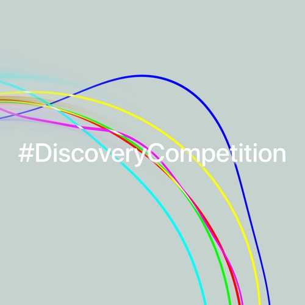
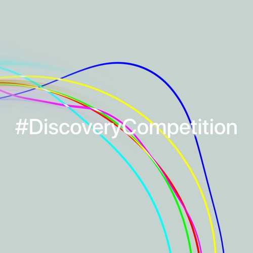

Hi, my name's Jonathan! I'm a Canadian composer, multi-instrumentalist
producer, and classically trained jazz musician of Cantonese and Scottish heritage!
Hi, my name's Jonathan! I'm a Canadian composer, multi-instrumentalist
producer, and classically trained jazz musician of Cantonese and Scottish heritage!
My musical journey began from the age of five, rigorously training in the art of classical piano and
cultivating a keen sense of technicality within the Royal Conservatory of Music. However, during my
rebellious teenage years, my impatience with the rigidity of classical music led me to stumble upon the
improvisatory world of jazz, where the works of Hiromi Uehara, Oscar Peterson, and Chick Corea
ultimately
inspired me to explore music beyond western culture. Since then, and especially considering these
influences, multiculturalism has remained a focal point of my musical journey: from learning Japanese
fusion jazz piano to playing finger-style and flamenco guitar; then from learning Chinese erhu to
producing
hip-hop beats and mastering digital audio production; all under the aspiration of becoming a musical
polyglot, and proving especially pertinent in my choice to become a composer.
As for composition, my journey began in Vancouver at the University of British Columbia where my
discovery
of scoring for interactive media via the Game Dev Club prompted my immediate conversion to studying
music
full-time. I eventually settled at the University of Lethbridge, where I not only began formally
studying
composition but also continued fuelling my multi-instrumentalist addiction and passion for orchestration
by
renting every instrument I could find.
During my studies, I continued freelance composing for award-winning games and animations while training
in
composing concert music under the mentorship of Dr. Arlan N.
Schultz. At the end of March 2024, after a spectacular semester of musical collaboration
with fellow
musicians in my graduation recital, I concluded my studies and
began my
journey into freelance composing and audio production.
~lastly, after my forty hours of daily music practice, I enjoy climbing rocks, gymnastically tumbling,
and
programming machines to do my bidding. üßó‚Äç‚ôÄÔ∏èü§∏‚Äç‚ôÄÔ∏èüíª(^-^)
——————————————————————
Performances & Events:
·(2024-03-24) - Graduation Recital - Jonathan
Alexander
·(2024-03-02) - Composers' Recital - University
of Lethbridge


 
